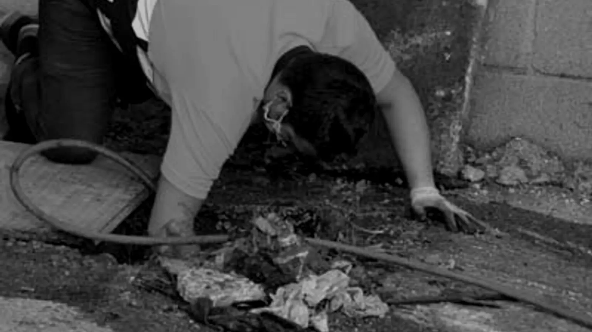
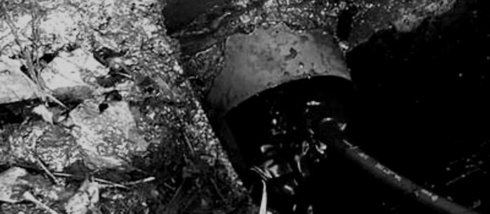

«24 horas, 365 días al año»
Desatascos Nago
649 90 59 87- Llama para cualquier desatasco: estamos a tu disposición.
- Particulares · comunidades · empresas
- «Moderna maquinaria para causar el mínimo daño»
- Irun y toda Euskadi
- 4,9 ★ · mira nuestras 58 opiniones en Google

Servicios
Desatascos, arquetas y saneamiento
- Del fregadero al alcantarillado.
- Inspección con cámara y tubería sin zanja.
- 649 90 59 87
Presupuesto sin compromiso
Llamar ahoraAsí trabajamos
«Aquí estamos, a su disposición. Cuéntanos qué es lo que necesitas.»— 1 · Llamas
«Nosotros nos encargamos: utilizaremos todos nuestros recursos para detectar y solucionar el problema.»— 2 · A trabajar
«Fase final. Solucionaremos su problema lo antes posible.»— 3 · Acabamos
«Un equipo humano de trato cercano, con mucha experiencia y moderna maquinaria para causar el mínimo daño al cliente.»— Desatascos Nago